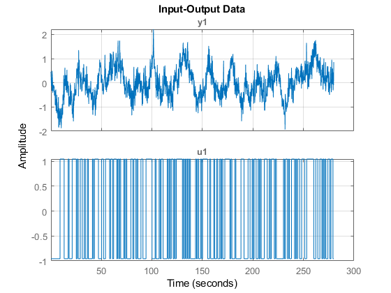
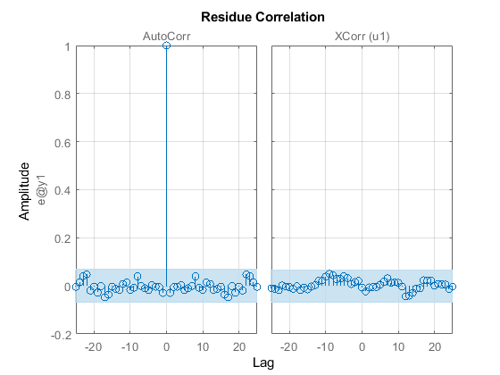
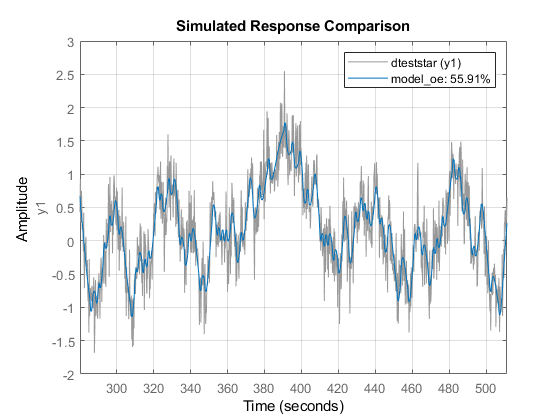

Bmax=0.2;
Range=[-1,1];
N=2555;
Ts=0.2;
u1=idinput(N,'prbs',[0,Bmax],Range);
uin = [(0:1:length(u1)-1)'*Ts (u1)];
data=iddata(out.ydata.Data,out.udata.Data,0.2);
figure
plot(data)

trndata=data(1:1400);
testdata=data(1401:end);
[dtrain,Tr]=detrend(trndata,0);
dtest=detrend(testdata,Tr);
figure
plot(dtrain)

FIR=impulseest(dtrain,[]);
figure
impulse(FIR,'sd',2)
figure
step(FIR)


model_oe=oe(dtrain,[2,2,3]);
figure
resid(model_oe,dtrain);
figure
compare(model_oe,dtest);
present(model_oe);
model_oe =
Discrete-time OE model: y(t) = [B(z)/F(z)]u(t) + e(t)
B(z) = -0.02918 (+/- 0.004051) z^-3 + 0.04249 (+/- 0.004587) z^-4
F(z) = 1 - 1.79 (+/- 0.012) z^-1 + 0.7968 (+/- 0.01169) z^-2
Sample time: 0.2 seconds
Parameterization:
Polynomial orders: nb=2 nf=2 nk=3
Number of free coefficients: 4
Use "polydata", "getpvec", "getcov" for parameters and their uncertainties.
Status:
Termination condition: Near (local) minimum, (norm(g) < tol)..
Number of iterations: 6, Number of function evaluations: 13
Estimated using OE on time domain data "dtrain".
Fit to estimation data: 49.59%
FPE: 0.1002, MSE: 0.09964
More information in model's "Report" property.


datastar=iddata(out.ystardata.Data,out.udata.Data,0.2);
trnstardata=data(1:1400);
teststardata=data(1401:end);
dteststar=detrend(teststardata,Tr);
figure
compare(model_oe,dteststar);
